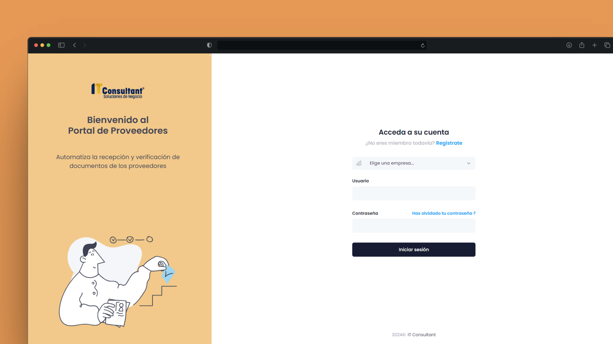
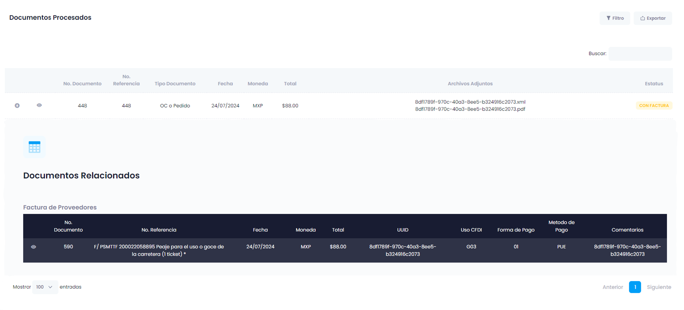
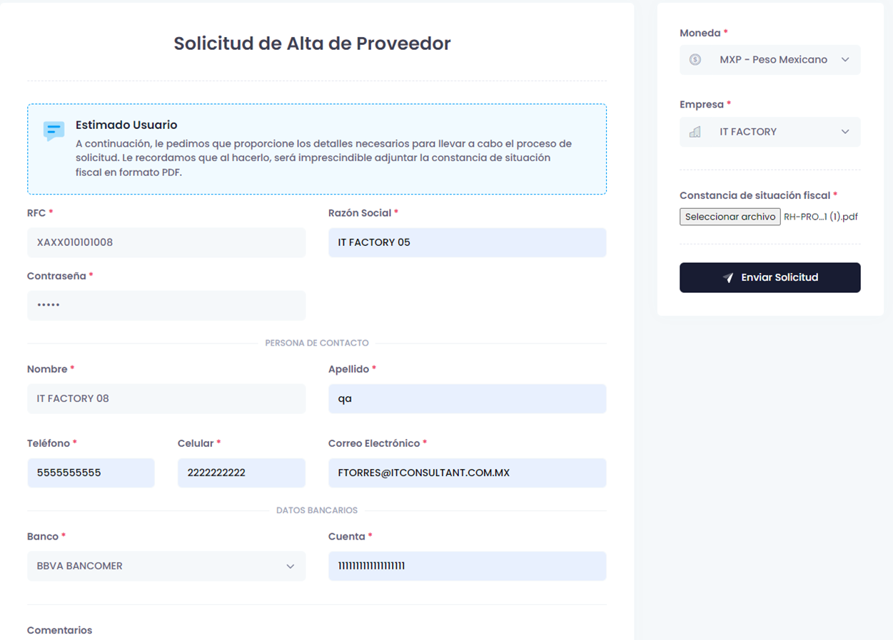

Portal de Proveedores
Plataforma web para validar CFDI, controlar documentación fiscal y conectar el proceso de proveedores con SAP Business One de forma trazable.


Validación fiscal XML/PDF
Integración con ERP
Operación por sociedad
Estatus y seguimiento
El portal centraliza la recepción documental de proveedores y reduce validaciones manuales antes de relacionar facturas con información existente en SAP Business One. La solución combina una experiencia simple para usuarios externos con reglas técnicas para proteger la calidad de datos del ERP.
Contexto y solución
La operación requería validar XML, PDF, UUID, RFC, importes y sociedad receptora antes de aceptar documentos de proveedores. Se implementó un portal que automatiza estas reglas, evita duplicidad documental y permite consultar el estatus de pago sin depender de procesos manuales o correos aislados.
Capacidades principales
Validación CFDI
Lectura de XML y PDF para validar UUID, RFC, importes y reglas fiscales previas al registro.
Integración SAP B1
Asociación de documentos con órdenes, facturas y datos registrados en SAP Business One.
Autoservicio proveedor
Alta, carga documental y consulta de estatus de pago desde una interfaz web clara.
Control multiempresa
Validaciones por sociedad, RFC receptor y repositorio centralizado de XML y PDF.
Arquitectura e integración
La solución separa la experiencia web, las reglas fiscales y la comunicación con SAP para mantener un flujo comprensible para negocio y suficientemente controlado para operación técnica.
ASP.NET MVC, vistas Razor, Bootstrap, jQuery y flujos guiados para proveedores.
Validación de CFDI, UUID único, tolerancia de importes y coincidencia de RFC.
Consultas SQL Server, reglas de negocio e integración con SAP Business One mediante DI API.
Repositorio de XML/PDF y seguimiento del estado documental asociado al proveedor.
Control documental
Validaciones antes de impactar el flujo ERP
El portal bloquea duplicidades por UUID, valida datos fiscales contra SAP, controla importes con tolerancia configurable y conserva evidencia documental para seguimiento interno y externo.
Mi rol
Desarrollé backend en ASP.NET MVC y C# para los flujos de carga, consulta y validación.
Implementé reglas CFDI conforme a necesidades fiscales y operativas del proceso.
Construí consultas SQL e integración con SAP Business One para validar documentos.
Diseñé interfaces funcionales para proveedores y equipos administrativos.
Fortalecí trazabilidad documental, soporte multiempresa y controles anti-duplicidad.
Un proceso más controlado para recibir, validar y consultar documentación de proveedores.
La plataforma redujo fricción operativa, mejoró la confiabilidad de la validación previa de CFDI y dio mayor visibilidad al estado de facturas antes de su seguimiento en SAP Business One.
-
Periodo:
2024
-
Tipo:
Sistema empresarial / Web App
-
Empresa:
IT Consultant
-
Rol:
Full Stack .NET Developer
-
Integración:
SAP Business One, SQL Server y SAP DI API
-
Disponibilidad:
Proyecto interno / no público
Capturas del sistema
Vistas principales para seguimiento documental y gestión de proveedores.


Consulta y seguimiento de documentos cargados por proveedores.


Alta de proveedores y administración de información base.